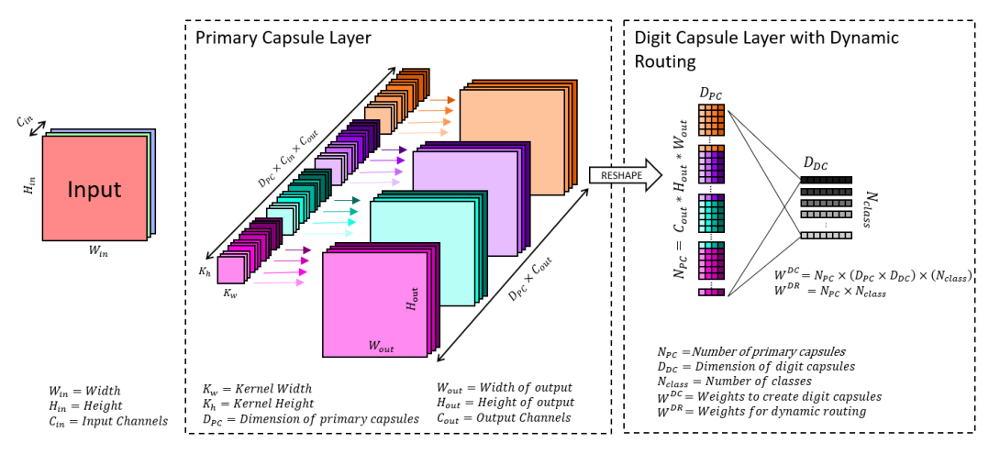
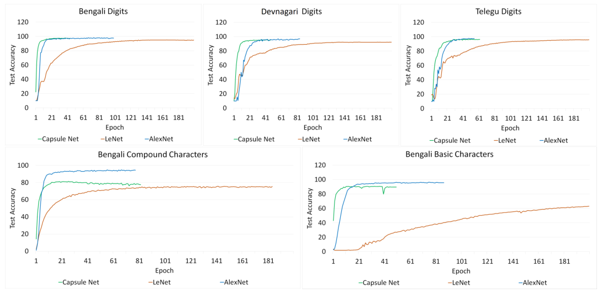

Capsule networks learn handwritten Bangla, Devanagari and Telugu quickly, and make AlexNet a little better
Handwritten character recognition is an old test for neural networks, and the usual tool is the convolutional network. A newer design called the capsule network claims to handle the position of parts inside an object better. In this paper we trained capsule networks to read handwritten digits and characters in three Indian scripts, and compared them with two classic networks, LeNet and AlexNet.
What a normal network misses
A convolutional network works with small filters (kernels) that slide across an image. Each filter detects one pattern, such as a curve or a stroke, wherever it appears. This makes the network good at finding features, but it also means the filters work on their own. If two filters detect two parts of a shape, the network reports the same strength whether those parts sit in the right places relative to each other or not.
People do not read like that. We notice how the pieces are arranged. Capsule networks, proposed by Sabour, Frosst and Hinton, try to build this in.
How a capsule network differs
A capsule is a group of filters that work together and output a small vector instead of a single number. The first capsule layer (the primary capsules) looks at the image. The last layer has one capsule per class, for example one for each digit.
In between sits dynamic routing. Each primary capsule gives its own opinion about what each class capsule should look like. The network then combines those opinions, checks how well each capsule agrees with the combined answer, and gives more weight to the capsules that agree. It repeats this a few times for every image. The length of each class capsule becomes the score for that class.

What we tested
We used five datasets from the CMATERdb collection: digits in Bangla, Devanagari and Telugu (10 classes each), Bangla basic characters (50 classes) and Bangla compound characters (199 classes). We split each set into training and test data in a 2:1 ratio.
The capsule network has about 8.2 million parameters (the numbers a network learns). LeNet has around 61 thousand and AlexNet around 57 million, so AlexNet is almost seven times larger than the capsule network. Besides the three networks alone, we also averaged the output probabilities of pairs of them and of all three.
What we found
The capsule network beat LeNet on every dataset. The gap was small on digits and huge on characters. On Bangla basic characters, LeNet scored 63.0% and the capsule network 90.6%. On Bangla compound characters, the 199-class problem, the scores were 75.4% and 79.3%.
AlexNet was still better than the capsule network on every dataset, for example 94.2% against 79.3% on compound characters. Its mean accuracy over the five sets was 96.29%, against 91.65% for the capsule network. The capsule network did learn faster, though. Its test accuracy climbed the steepest in the first few epochs, which are passes over the training data.

The combination helped on all five datasets, for instance 96.2% against 95.9% on Bangla basic characters. Averaging LeNet with AlexNet made AlexNet worse on every dataset. We read this as a sign that the capsule network picks up something AlexNet misses, despite having far fewer parameters. The best combinations also scored above the earlier published results we listed for these datasets, such as 94.40% against 93.12% on compound characters. For Telugu digits the best result, 97.8%, came from combining all three networks.
What it does not do
Capsule networks are slow per step, because the routing has to be repeated for every image. The original design also allows routing only in one layer. And on its own the capsule network did not match AlexNet on the harder character sets. All three networks combined also did badly on compound characters (75.2%), so adding more networks does not always help.
These limits are why we saw this work as a starting point. A faster routing step and capsules deeper in the network were the open questions we pointed to.
Acknowledgements
This work was partially supported by the project order no. SB/S3/EECE/054/2016, dated 25/11/2016, sponsored by SERB (Government of India), and carried out at the Centre for Microprocessor Application for Training Education and Research, CSE Department, Jadavpur University.
How to cite the paper
B Mandal, S Dubey, Swarnendu Ghosh, R Sarkhel, N Das (2018). Handwritten Indic character recognition using capsule networks. 2018 IEEE Applied Signal Processing Conference (ASPCON), pp. 304–308 · IEEE.